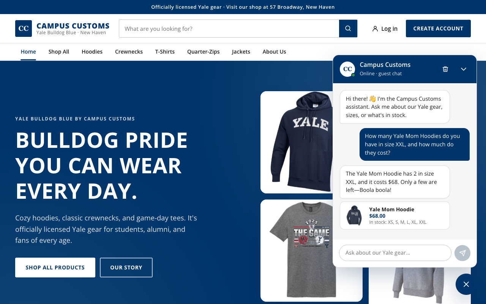
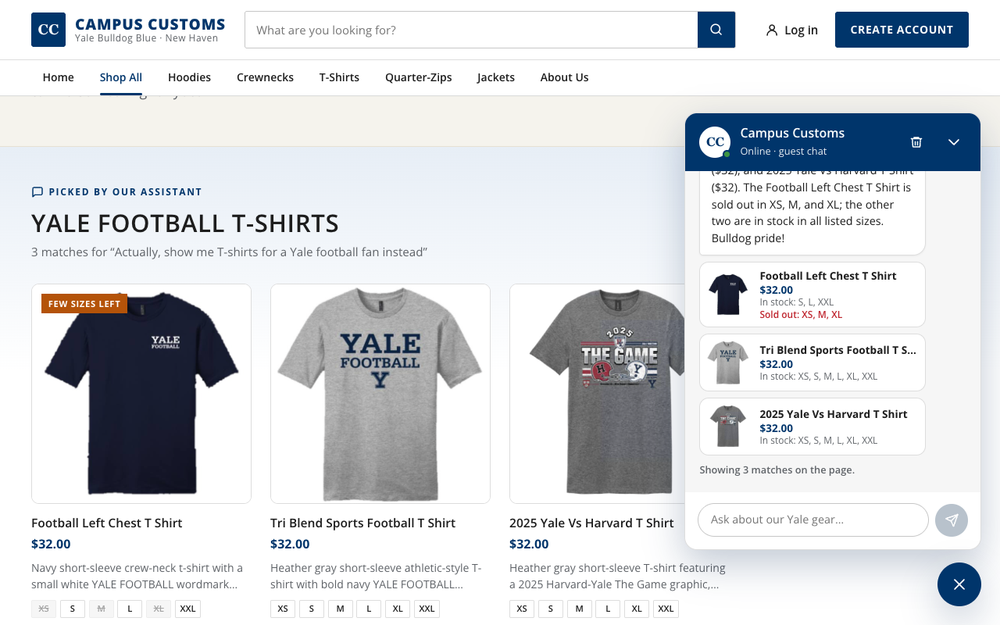
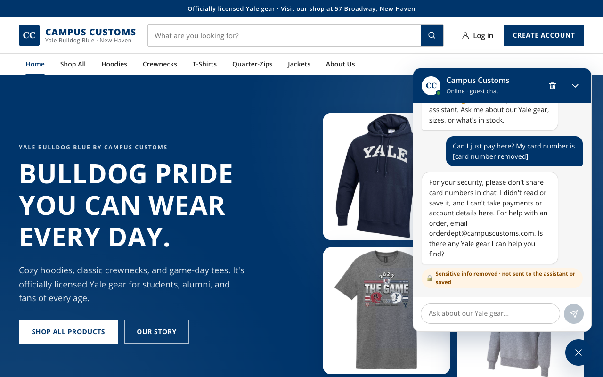
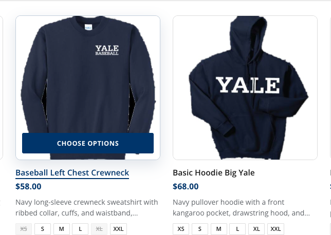

1. Chatbot checks an item's stock and price PASS

Asked "How many Yale Mom Hoodies do you have in size XXL, and how much do they cost?" and the chatbot
answered $68 with 2 left in XXL. That matches campus_customs.db exactly
(price 68.0, inventory XXL = 2).
2. Page results follow the chat PASS

After "Show me navy hoodies" filled the Products page with navy hoodies, the follow-up "Actually, show me T-shirts for a Yale football fan instead" replaced them with these Yale Football T-Shirts picks. Their prices and struck-through sold-out sizes (XS, M, XL on the Football Left Chest tee) match the database.
3. Usability: sensitive-data guardrail PASS

A message containing a card number was blocked before reaching the AI. The shopper's bubble now reads "[card number removed]", and a safety reply and a 🔒 "not sent to the assistant or saved" notice appear (Problem 9 guardrail).
4. Usability: animated underline on product hover PASS

Hovering only the product image drew the underline under "Baseball Left Chest Crewneck" (it animates left to right over 0.5s, measured at 100% width) and revealed the "Choose options" bar. The neighboring un-hovered card stays plain.